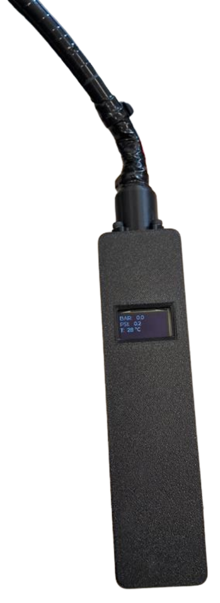

Metodologia
Desenvolvimento: requisitos, seleção de componentes, implementação e testes. A calibração foi etapa-chave para garantir precisão.
Processo de calibração
- Obter um manômetro de referência (manômetro calibrado).
- Comparar leituras do sensor com o referencial em múltiplos pontos de pressão.
- Ajustar ganho e offset no software (linearização e correções).
- Testar em diferentes temperaturas para avaliar deriva térmica.
- Registrar erro e repetir até atingir a tolerância desejada.
Desenvolvimento do Projeto
A imagem abaixo representa um dos primeiros testes dos sensores feito pelo grupo.
Após vários testes com êxito, o grupo decide implementar os componentes junto ao molde 3D feito.
Últimos ajustes e finalização do código.
Projeto finalizado com sucesso.
